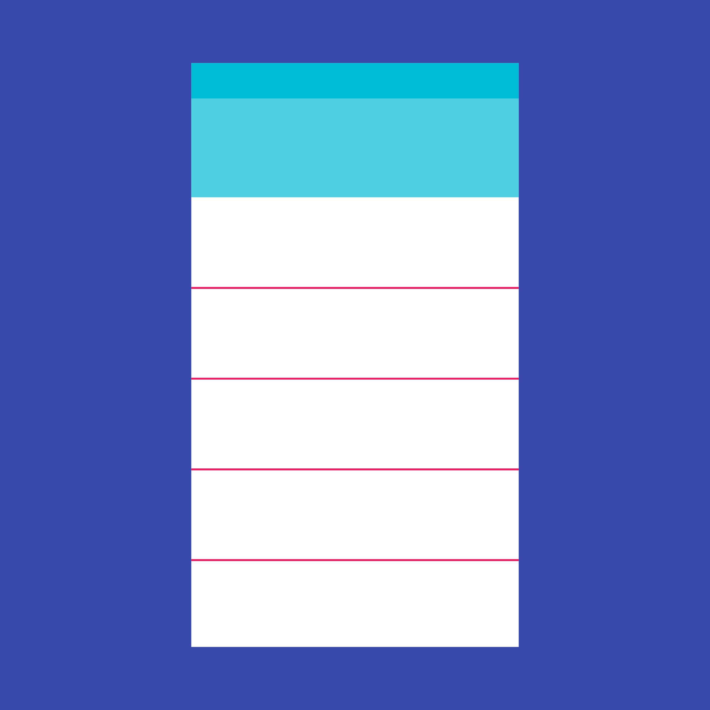

A divider is a thin, lightweight rule that groups content in lists and page layouts.
Dividers help organize page content and hierarchy into individual tiles.
Full-bleed dividers emphasize separate content areas and sections that require more distinct visual separation. Alternatives to full-bleed dividers include white space, subheaders, or inset dividers.
Image-based content in grid lists does not need dividers. Grid lists adequately separate content using white space and subheaders.
Usage
For lists and to separate content
Type of dividers
- Full-bleed dividers are used to separate distinct content sections.
- Inset dividers are used to separate related content.
Specs
- Thickness: 1dp
- Opacity: 12% black or 12% white
- Placement: Along the bottom edge of content tiles
